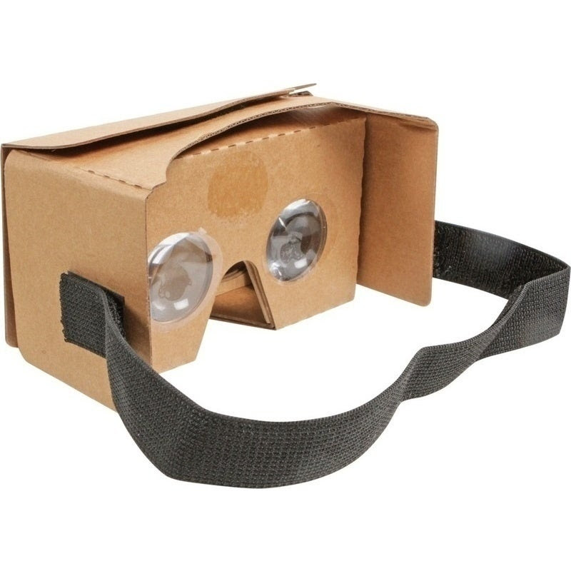
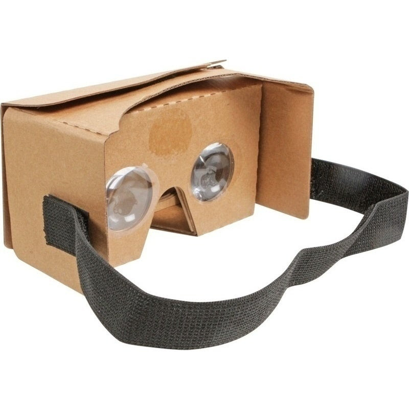
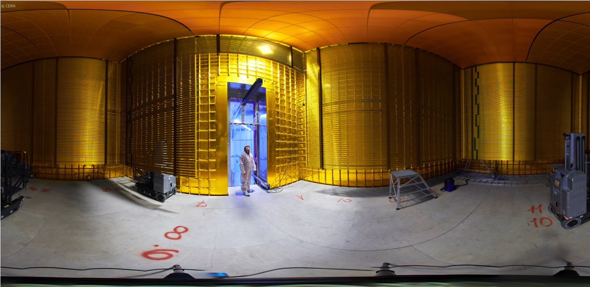
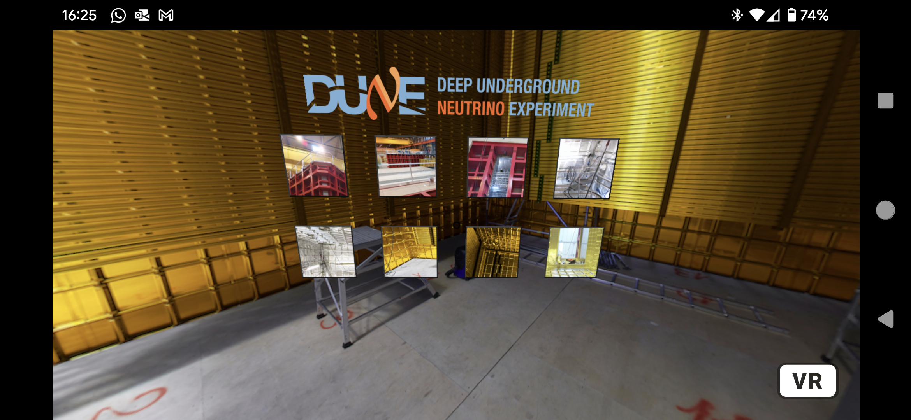

DUNE VR in the Browser
Software and usage
- The web browser as a target platform can be straightforward to develop for and can allow for easy (and frequent) deployment of applications.
- A-Frame, "a web framework for building 3D/AR/VR experiences" is used for this application
- Idea: With A-Frame use the panoramic images available on CERN Document Server (like these) to make an application to explore DUNE (protoDUNE actually). Something similar has been done for CMS.
- Usage: As a stand-alone application in the desktop or (even better) in a tablet or mobile (the view changes as you move the device). You can emded it in a webpage as well. There is even a possibility for stereo VR viewing with the right equipment (like a Google Cardboard viewer). This is what's described here.
 

DUNE VR
- GitHub repo: https://github.com/HEPPanoramic/dune-vr
- Current test deployment: https://heppanoramic.github.io/dune-vr/
Turn something like this...
...into something like this
Status and possible improvements
The application as-is is already a "minimum viable product" but there could be improvements:
- There is a lack of context and explanation for each image and location: some (minimal) explanation is needed
- The navigation is "flat": perhaps make it a "journey" going from one location to the other?
- Idea: add a panoramic "room" populated with DUNE event displays and plots
To-do
- Determine how to best distribute the application: inexpensive phones already loaded into (minimally-branded?) cardboard viewers?
- Determine minimum hardware and browser requirements
- Make use of 3D files of detector and events?